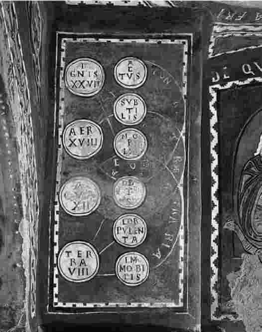
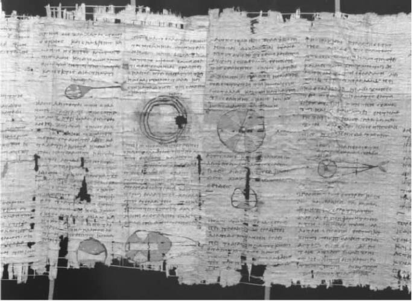

亚里士多德是个勤劳的收集者，收集了关于大量不同主题的海量的信息。他同时又是一个抽象的思想家，哲学思想非常宽泛。他智力活动的两个方面在他的精神世界中不是隔开的。相反，亚里士多德的科学工作和他的哲学研究是一个统一的知识观的两个等分。亚里士多德是个卓越的科学家，又是一个深邃的哲学家，但是正是哲人科学家的身份使得他出类拔萃。按照一个古代格言的说法，他是“一个笔蘸思想之墨的自然抄写员”。
他的主要哲学科学著作为《物理学》、《论生灭》、《论天》、《气象学》、《论灵魂》、一本被称做《自然诸短篇》的短篇哲学论文集、《动物结构》以及《动物的生殖》。这些著作都是科学著作，因为它们都是建立在经验研究之上，并试图对所观察到的现象进行整理和解释。它们同时又都是哲学著作，因为它们是自觉的思考、是沉思性的，具有系统的结构，试图获得事物的真理。
亚里士多德本人在《气象学》开篇就表明了他作品的总体计划。
亚里士多德就现实的本质提出了一个明确的观点。尘世间的基本元素或基本原料有四种：土、空气、火和水。每一种元素都可由四大基本能力或特性来界定——潮湿、干燥、冷和热。（火，热而干；土，冷而干……）这些基本元素每个都有自然的运动趋势和自然的位置。火，如果顺其自然的话，会向上运动，会在宇宙的最边缘找到自己的位置；而土则会向下运动，到达宇宙的中心；空气和水的位置界于前两者之间。这些元素能够相互作用并相互转化。元素间的相互作用在《论生灭》中进行了讨论；相互作用的间接形式——类似化学反应——可在《气象学》第四卷里找到相关的讨论。
土倾向于向下运动，我们的地球自然就成了宇宙的中心。在地球和大气之外是月亮、太阳、行星和恒星。亚里士多德以地球为中心的天文学观点，即天体都位于一系列的同心圆上，不是他自己的创造。他不是专业的天文学家，但可依靠同时代天文学家欧多克斯和卡利普斯的著作获得观点。专著《论天》主要关注的是抽象天文学。亚里士多德的主要论点是，物理世界在空间上是有限的，而在时间上则是无限的：宇宙是一个巨大但有边界的球形体，无始无终地存在着。

图1613世纪画有亚里士多德基本元素的一幅画：“尘世间的基本元素或基本原料有四种：土、空气、火和水。每一种元素都可由四大基本能力或特性来界定——潮湿、干燥、冷和热。”
在地球和月球之间有“半空”。《气象学》研究这种半空，其拉丁语名ta meteôra可直译为“悬在半空的事物”。这个短语原来指的是云、雷电、雨、雪、霜、露水等诸如此类的现象——概括地说，指的就是天气现象；不过，很容易将它扩展，进而包括应该归类到天文学里的事物（比如流星、彗星、银河）或者应归类到地理学里的事物（比如江河、海洋、山等）。亚里士多德的《气象学》中含有他自己对这些现象的解释。该著作有很坚实的经验基础，又有强有力的理论指导。事实上，这种统一性很大程度上源自一个主导的理论概念——“蒸发”——的影响。亚里士多德认为，“蒸发”是土不断地进行水分散发。有两种蒸发：潮湿的或蒸汽的蒸发和干燥的或冒烟的蒸发。它们的行为可以用统一的方式解释发生在半空中的大多数现象。
在地球本身上，最显著的研究对象是有生命的事物以及它们的结构。“就动物结构而言，有的结构是不可分解的，即那些结构可分成成分完全一样的几份（比如，肉可分成成分完全一样的几块肉）；其他则是可分解的，即可分成成分不一样的几份（比如，一只手不能分成几个相同成分的手；脸不能分成几个相同成分的脸）……所有成分不一样的结构都是由成分一样的结构组合而成的，比如，手是由肉、肌腱和骨头构成的。”但是，在无生命和有生命的事物之间没有明显的界限；而且尽管有生命的事物能够以一种等级——一种重要性和复杂程度递增的“自然之梯”——来划分，等级的各个水平之间也不是截然分开的。在植物和最低等的动物之间就没有明确的界限；并且从最低等的动物到位于梯级顶端的人类，存在连续不断的进化关系。
这就是自然世界。而且永远是这样，在不断变化中体现不变的规律。
那么，这个世界是如何受到支配的呢？是神灵使之运行的吗？从表面上看，亚里士多德是个传统的多神论者；至少，在他的遗嘱里，他安排在斯塔吉拉城同时建宙斯和雅典娜的雕像。但是，这样的仪式性行为并不反映他的哲学理念：
宙斯和雅典娜，奥林匹亚万神殿的诸多与人同形同性的神灵都是神话；不过“我们的远祖们”并非纯粹迷信的传播者。他们首先正确地或部分正确地看到，“基本实在”是神性的（“神对每个人来说都是因之一，是一种第一原则”），其次也看到应在天上寻找基本实在。
天体，亚里士多德经常称其为“神圣的实体”，其成分是一种特殊的原料——第五种元素或“最高的精髓”；因为“存在其他独立于我们周围实体的某种实体，它的本性更卓越，因为它远离它下面的世界”。既然“那是在思考和使用其智力时最神圣的事物的功能”，作为神圣的天体就必然是有生命的、有智力的。因为尽管“我们倾向于把它们看做不过是实体——呈现出秩序但却没有生命的单元——我们必须假定它们具有行为能力、分享了生命……我们必然认为星星的行为就像动物和植物的行为一样”。
在《物理学》第八卷里，亚里士多德论证存在一种自身不变的变化之源——通常称做“不动的原动力”。他认为如果宇宙里存在变化，必然存在某种原始之因，把变化带给他物而自身不发生变化。这种不动的原动力位于宇宙之外：“是必然存在还是必然不存在一种事物，它不发生变化，并且不管发生什么样的变化都置身于外、不在其中？对宇宙万物而言这一点也是必定正确的吗？如果变化原理也包括在其中，这理所当然是很荒谬的。”这种外在的原动力“出于爱好而引发变化；而其他事物通过自身变化而引发其他变化”。同心运动的球形天体以及它们所携带的天体都是精髓，是神圣的；但是它们都是移动着的神。在它们之外，在宇宙之外的无形之物便是第一位的神，自身不变却是所有变化的推动者。
我们如何解释所有这一切？一些学者似乎按字面意义来理解亚里士多德的话，在他的著作里发现到处都有活着的神——他因此变成一个彻底的宗教科学家。其他学者则把亚里士多德使用的“神”和“神圣的”字眼看做一种说话方式：基本实在是神圣的仅仅是因为其他事物都依赖它们——亚里士多德又成了一位十足的世俗思想家。

图17“亚里士多德以地球为中心的天文学观点，即天体都位于一系列的同心圆上，不是他自己的创造。他不是专业的天文学家，但可依靠同时代天文学家欧多克斯和卡利普斯的著作获得观点。”图为欧多克斯的著作《论天体》莎草纸版本（公元2世纪）的一部分。
这两个观点都不可信。在他的专题论著里出现那么多关于神的内容，我们无法忽视亚里士多德所作的神学阐述，把它们看做伪善的文字游戏。而另一方面，亚里士多德所说的神又是非常抽象、遥远而非人格化的，不能被视为宗教崇拜的对象。相反，我们也许可以把亚里士多德关于宇宙神性的论述与自然及其行为在他心中所引起的惊叹联系起来。“正是因为惊叹，人类才会着手研究哲学，从最初开始直到现在”；而且这种研究如果开展适当，不会降低研究之初的羡慕之情。亚里士多德对他周围世界的价值和卓越之处怀有深深的敬意：